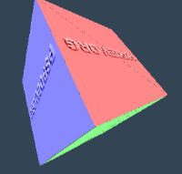

Generative Programming &
Declarative Interfaces
Emulating the Nintendo 3DS
Tony Wasserka
@fail_cluez

Aspen
8 May 2018
Who am I?
- C++ enthusiast: Low-level & type-safety
- Game console emulation: GC/Wii/3DS/PSP
- Twitter: @fail_cluez
- GitHub: neobrain 
- Available for contracting:
OS kernels, device drivers, embedded systems
PPSSPP
Citra
What is this about?
- Serialization & emulation
- Case study: InterProcess Communication (IPC)
- How does generative programming help?
- What can be automated and how?
- How can we maximise reuse?
Emulation & Serialization
High-Level Software:Emulation & Serialization
Games:Emulation & Serialization
Emulated Games:Untyped Sea
of raw data
Serialization & Emulation
Examples:
- System Calls: CPU registers ⟶ C++ function
- IPC: Memory ⟶ C++ function
- Emulated file IO: Memory ⟶ C++ struct
- GPU command buffers & driver command queues
How to do this reliably?
- Avoid repetitive boilerplate
- Validate inputs and consistency (more boilerplate)
- Detect invalid states in the emulated system
Today's goal: Let the compiler deal with it!
Emulation & Serialization
Example: System Call Emulation on ARM32| Register | Value |
|---|---|
| r0 | 0x1800600 |
| r1 | 5 |
| r2 | 0x1ff02000 |
| r3 | 12 |
| r4 | 0x200 |
| … |
svc 0x55
⟶
auto [result,dma] = SvcStartDma(LookupHandle(5),
0x1ff02000,
LookupHandle(12),
0x1800600,
0x200)Presented at C++::London:
Generative Programming in Action: Emulating the 3DS
The Nintendo 3DS
The Nintendo 3DS
- Released in 2011
- 2 CPU cores: ARMv6 @ 268 MHz
- Unique-ish GPU (DMP PICA200)
- 128 MB FCRAM
- Software stack:
- Microkernel (fully multitasking)
- About 40 microservices
- Games (+ web browser)
The 3DS Software Stack
|
Game/Browser
Runs on emulated CPU
|
|||||
|
Services
API emulation
(or could run on emulated CPU) |
|||||
|
Kernel: Horizon
API emulation
|
|||||
|
ARM11 CPUs
Interpreter
|
InterProcess Communication
InterProcess Communication
IPC is crucial to everything:
- Rendering graphics (gsp) & playing audio (dsp)
- Accessing WiFi (soc) & connecting to friends (frd)
- Loading assets & saving progress (fs)
- …
~40 processes ("services") in total,
each serving different functionality
IPC Protocol
- Client-Server based: Games ⇄ Services
- Request-response exchange via command blocks
- Marshalling of sensitive data by the OS kernel
- Hierarchy of abstraction for exploit mitigation
Emulating IPC command handlers
Common structure on handler dispatch:
- Select C++ handler function based on command index
std::tuple<Result,uint32_t> DoReadFile(uint32_t, uint64_t, uint64_t, BufferPointerW) - Verify command header (number of parameters)
(cmd_header & 0xFF == 5) && ((cmd_header >> 8) & 0xff == 2) - Parse parameters from command block
header
0x8020205uint32
5uint64_lo
0xdeadbeefuint64_hi
0x5555uint64_lo
0xd00fuint64_hi
0buffer descriptor
…buffer addr
0x1ff00200 - Invoke C++ handler function
DoReadFile(5, 0x5555deadbeef, 0xd00f, BufferPointerW{0x1ff00200}); - Write response back to command block
header: 0x8020002 Result: 0x0 Result 2: 0xd00f
Emulating IPC command handlers
How often do we need to write this logic?- ~40 active processes
- Each with ~30 IPC commands on average
- Manual glue to invoke the C++ handler required for each
That is a lot of work. Or is it?
Enter Generative Programming
Generative Programming
Building Blocks

Our Vision
std::tuple<Result, uint32_t>
DoReadFile(uint32_t file_descriptor, uint64_t offset,
uint64_t num_bytes, WriteableBuffer& output)
using RequestList = std::tuple<uint32_t, uint64_t, uint64_t, WriteableBuffer>
using ResponseList = std::tuple<Result, uint32_t>
template<typename... T> tuple<T...> DecodeMessage(CmdBlock&)
template<typename... T> void EncodeMessage(CmdBlock&, T... data)
GlueCommandHandler(cmd_block, DoReadFile)
Function Traits
- Function traits:
- Type traits for functions
- Get parameter list & return type
template<typename F>
struct FunctionTraits {
using Args = std::tuple< /* Parameter list of F */ >;
using Result = /* Return type of F */;
};
Implementations available in
- Boost.FunctionTypes (C++98?)
- Boost.CallableTraits (C++11)
Standalone: https://github.com/badair/callable_traits
Function Traits
Minimal implementation
template<typename F>
struct FunctionTraits;
// Specialize for free functions
template<typename FuncResult, typename... FuncArgs>
struct FunctionTraits<Result(Args...)> {
using Args = std::tuple<FuncArgs...>;
using Result = FuncResult; // NB: This will be some tuple<> for us
};
Generators
Core idea: Generate runtime code based on a type list via
- Recursion
for_each(tuple, f)
- parameter pack expansions (C++11)
- fold expressions (C++17)
We got our type list from FunctionTraits
How do we generate a command block decoder?
Generators
std::tuple<uint32_t, uint64_t, uint64_t, WriteableBuffer >
| header 0x8020205 | uint32 5 | uint64_lo 0xdeadbeef | uint64_hi 0x5555 | uint64_lo 0xd00f | uint64_hi 0 | buffer descriptor … | buffer addr 0x1ff00200 |
template<typename TypeList> struct DecodeAllAndApply;
template<typename... Ts>
struct DecodeAllAndApply<std::tuple<Ts...>> {
uint32_t offset = 0x1; // offset into command block
// Read a single entry from the CmdBlock and advance "offset"
template<typename T>
auto DecodeEntry(CmdBlock& block) { ... }
// Iterate the entire CmdBlock, gather results and apply to "f"
template<typename Handler>
auto operator()(CmdBlock& cmd_block, Handler&& handler) {
return handler(DecodeEntry<Ts>(cmd_block)... );
}
};Generators
std::tuple<uint32_t, uint64_t, uint64_t, WriteableBuffer >
| header 0x8020205 | uint32 5 | uint64_lo 0xdeadbeef | uint64_hi 0x5555 | uint64_lo 0xd00f | uint64_hi 0 | buffer descriptor … | buffer addr 0x1ff00200 |
template<typename... Ts>
struct DecodeAllAndApply<std::tuple<Ts...>> {
uint32_t offset = 0x1; // offset into command block
template<typename T>
auto DecodeEntry(CmdBlock& block) {
if constexpr (std::is_same_v<T, uint32_t>) {
return block.ReadU32(offset++);
} else {
...
}
}
};
Generators
std::tuple<uint32_t, uint64_t, uint64_t, WriteableBuffer >
| header 0x8020205 | uint32 5 | uint64_lo 0xdeadbeef | uint64_hi 0x5555 | uint64_lo 0xd00f | uint64_hi 0 | buffer descriptor … | buffer addr 0x1ff00200 |
template<typename... T>
struct DecodeAllAndApply<std::tuple<Ts...>> {
uint32_t offset = 0x1; // offset into command block
template<typename T>
auto DecodeEntry(CmdBlock& block) {
// ...
} else if constexpr (std::is_same_v<T, uint64_t>) {
uint32_t val_low = block.ReadU32(offset++);
uint32_t val_high = block.ReadU32(offset++);
return (val_high << 32) | val_low;
} else {
...
}
}
};Generators
std::tuple<uint32_t, uint64_t, uint64_t, WriteableBuffer >
| header 0x8020205 | uint32 5 | uint64_lo 0xdeadbeef | uint64_hi 0x5555 | uint64_lo 0xd00f | uint64_hi 0 | buffer descriptor … | buffer addr 0x1ff00200 |
template<typename... T>
struct DecodeAllAndApply<std::tuple<Ts...>> {
uint32_t offset = 0x1; // offset into command block
template<typename T>
auto DecodeEntry(CmdBlock& block) {
// ...
} else if constexpr (std::is_same_v<T, WriteableBuffer>) {
uint32_t descriptor = block.ReadU32(offset++);
auto [size, flags] = DecodeBufferDescriptor(descriptor);
uint32_t address = block.ReadU32(offset++);
return WriteableBuffer { address, size };
} else {
...
}
}
};Generators:
std::tuple<uint32_t, uint64_t, uint64_t, WriteableBuffer >
| header 0x8020205 | uint32 5 | uint64_lo 0xdeadbeef | uint64_hi 0x5555 | uint64_lo 0xd00f | uint64_hi 0 | buffer descriptor … | buffer addr 0x1ff00200 |
template<typename TypeList> struct DecodeAllAndApply;
template<typename... Ts>
struct DecodeAllAndApply<std::tuple<Ts...>> {
uint32_t offset = 0x1; // offset into command block
// Read a single entry from the CmdBlock and advance "offset"
template<typename T>
auto DecodeEntry(CmdBlock& block) { ... }
// Iterate the entire CmdBlock, gather results and apply to "f"
template<typename Handler>
auto operator()(CmdBlock& cmd_block, Handler&& handler) {
// FIXME: Execution order undefined :(
return handler(DecodeEntry<Ts>(cmd_block)... );
}
};Generators:
Demo time!
Generators: Result encoder
| header 0x8020002 | Result 0x0 | uint32_t 0xd00f |
Trivial with fold expressions!
template<typename TypeList> struct EncodeAll;
template<typename... Ts>
struct EncodeAll<std::tuple<Ts...>> {
uint32_t offset = 0x1;
template<typename T>
void EncodeEntry(CmdBlock& block, T t) { ... }
void operator()(CmdBlock& cmd_block, Ts... ts) {
(EncodeEntry<T>(cmd_block, ts), ...);
}
};Putting Things Together
GlueCommandHandler(DoReadFile, cmd_block);template<typename Handler>
void GlueCommandHandler(Handler&& handler, CmdBlock& cmd_block) {
auto request_header = cmd_block.ReadU32(0);
using RequestList = typename FunctionTraits<Handler>::Args;
using ResponseList = typename FunctionTraits<Handler>::Result;
auto results = DecodeAllAndApply<RequestList>{}(cmd_block, handler);
cmd_block.WriteU32(BuildResponseHeader(results));
EncodeAll<ResponseList>{}(cmd_block, results);
}Omitted for now:
- Command header verification
- BuildResponseHeader
But: This can be used for all IPC commands!
</Reflective_Generators>
<Declarative_Generators>
Declarative Compile-time Programming
Building blocks:
IPC Commands
Need command id + four different type lists:- Value-based "normal" parameters (simple copy)
- Special parameters (require preprocessing/translation)
- Normal and Special parameters for the response
E.g. FS::OpenFile:
- Request takes
IOFlags
,FileAttributes
, anduint32_t
, but also - Request takes a
StaticBuffer
- Response gives a
FileDescriptor
, and - Response gives no special parameters
A Declarative Interface
template<uint32_t CommandId>
struct IPCCmd {
template<typename... NormalParams>
struct normal {
template<typename... SpecialParams>
struct special {
// Export template params in the interface
static constexpr uint32_t command_id = CommandId;
using normal_params = std::tuple<NormalParams...>;
using special_params = std::tuple<SpecialParams...>;
};
};
};
namespace FS { // FileSystem-related commands
using OpenFile = IPCCmd<0x802>
::normal<IOFlags, FileAttributes, uint32_t>
::special<StaticBuffer>;
using GetFileSize = IPCCmd<0x804>
::normal<FileDescriptor>
::special<>;
}
A Declarative Interface
Adding IPC response layout information is trivial:template<uint32_t CommandId>
struct IPCCmd {
template<typename... NormalParams>
struct normal {
template<typename... SpecialParams>
struct special {
template<typename... ResponseNormalParams>
struct response {
// Export template params in the interface
static constexpr uint32_t command_id = CommandId;
using normal_params = std::tuple<NormalParams...>;
using special_params = std::tuple<SpecialParams...>;
using response_normal_params = std::tuple<ResponseNormalParams...>;
};};};};
namespace FS {
using GetFileSize = IPCCmd<0x804>
::normal<FileDescriptor>::special<>
::response<uint64_t>;
// ...
}
A Declarative Interface
using GetFileSize = IPCCmd<0x804>
::normal<FileDescriptor>::special<>
::response<uint64_t>;Builder-like pattern:
- More expressive than plain type lists
- Enforcement of type ordering constraints
- Can handle multiple parameter packs
- Easy to extend interface to include more information
Declarative anatomy of the full IPC command structure!
Generators with declarative interfaces
template<typename IPCRequest, typename Handler>
void GlueCommandHandler(Handler&& handler, CmdBlock& cmd_block) {
auto request_header = cmd_block.ReadU32(0);
if (request_header != IPCRequest::request_header)
throw std::runtime_error("Invalid request header");
auto results = DecodeAllAndApply<IPCRequest::request_list>{}(cmd_block, handler);
cmd_block.WriteU32(IPCRequest::response_header);
WriteFold<ResponseList>{cmd_block}.Run(results);
}
Declarative Compile-time Programming
Building blocks:
Conclusion
- Untyped data makes serialization centric to emulation
- Generating code via stateful variadic folds over type lists
Fold expressions are big for simplicity! - Reflection to synthesize code from data structures
We have function traits now, full reflection in C++2n? - Declarative interface for maximizing reuse
- Vastly more maintainable and expressive at zero overhead